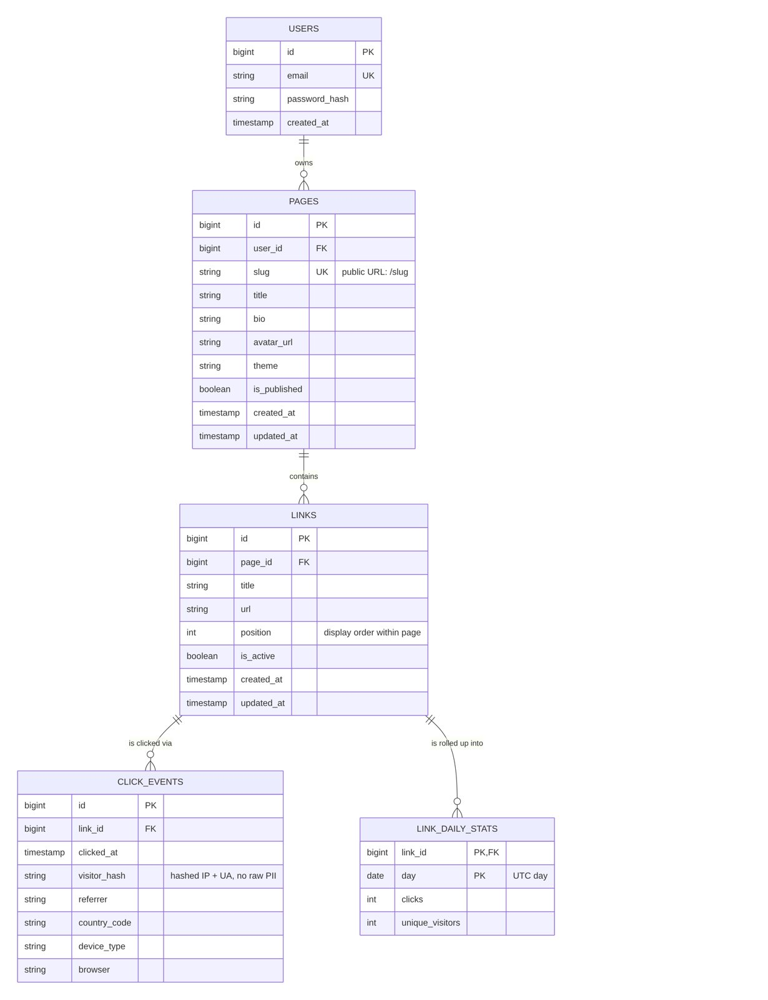
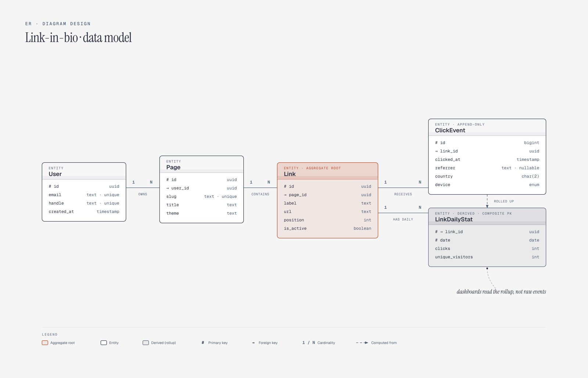
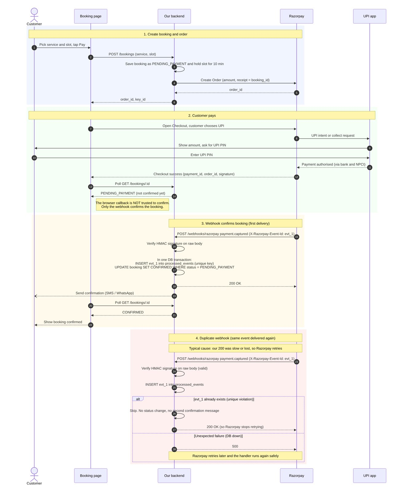
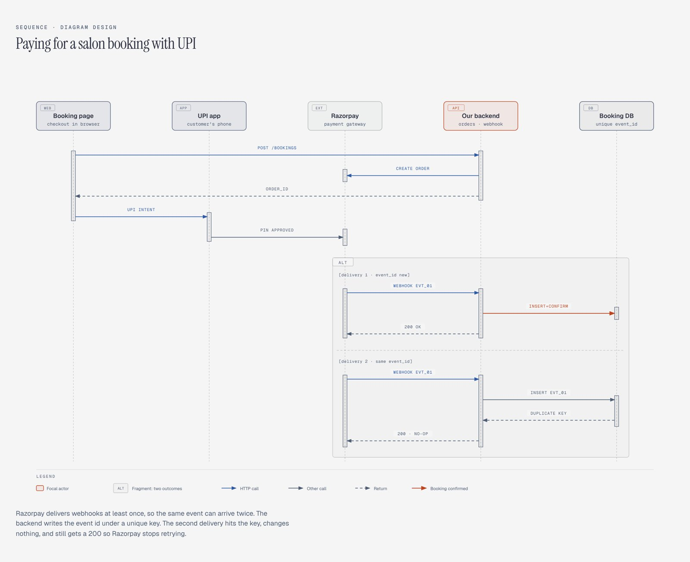

Brutal Test Kit: cathrynlavery/diagram-design, "editorial diagrams, no Mermaid slop"
LEGIT* *it does what the README says. Watch the token cost, and check what it cut.
Tested 22 Nov 2026 on commit d7b0176. Model: Claude Sonnet 5.5 on my own API key. Same 3 prompts, run once plain and once with the skill (the data-model prompt twice each): 4 plain runs and 4 skill runs.
How the skill was loaded: a small harness (dd_harness.py) that calls the API directly and lists the skill the way Claude Code does: its name, its own description and where SKILL.md is. The model decides on its own whether to read it. The plain runs are identical except that no skill is listed. This is not Claude Code itself. Both modes had the same tools (read/write files, run Python, fetch a URL). Playwright wasn't installed, so the skill skipped its own "render and look" step and said so.
The prompts (mini projects, not toys)
- Architecture: an expense-splitting app (Google sign-in, Postgres, S3 receipts, OCR worker on a queue, email)
- Sequence: paying for a salon booking with UPI through Razorpay, including a duplicate webhook
- Data model: a link-in-bio site with analytics
What happened
| Run | Output | Tokens* | Time |
|---|---|---|---|
| plain, architecture | hand-written SVG, 5 colours | 17,392 | 109 s |
| skill, architecture | HTML + SVG, 1 accent | 377,847 | 293 s |
| plain, sequence | Mermaid | 9,404 | 27 s |
| skill, sequence | HTML + SVG | 406,402 | 243 s |
| plain, data model (x2) | Mermaid, Mermaid | 6,972 / 6,818 | 18 s / 18 s |
| skill, data model (x2) | HTML + SVG, HTML + SVG | 434,937 / 462,090 | 207 s / 197 s |
*input + cache reads + cache writes + output, as the API reports them (tokens.jsonl). One interrupted call during the skill architecture run isn't in the log, so that total is slightly low.
What held up
- 51 diagram types: 51 type references ship in the skill (the GitHub About line still says 45).
- One self-contained HTML file: 4/4, no JavaScript, no shadows. The only network request is Google Fonts, which the README discloses.
- 4px grid: all 54 node boxes in the 4 skill diagrams have x, y, width and height divisible by 4.
- Its own checks: the skill ran self_check.py and verify_geometry.py itself in 4/4 runs. I re-ran both: 0 findings.
- Loads by itself: read SKILL.md first in 4 of 4 skill runs.
- "No Mermaid slop": plain Sonnet answered in Mermaid in 3 of 4 runs.
The catches
- Tokens: 22x to 68x more than plain for the same prompt (62x on the first data-model pair). Most of it is the skill reading SKILL.md plus 6-9 reference files, then carrying them through every turn.
- It cuts detail on purpose ("target density 4/10", max 5 lifelines in a sequence). In the UPI sequence, the skill version left out the webhook signature check. Razorpay's docs say to verify
X-Razorpay-Signatureon every webhook. The plain Mermaid version kept it, plus "don't trust the browser callback" and a DB-down retry path. - First-use pause: 4/4 skill runs stopped to ask about brand/style before drawing. The harness answered "Proceed with the default style."
- Slower: about 3-5 minutes per diagram vs 18 s to 2 min plain.
- Empty band: every skill diagram had a large blank space between the title and the diagram.
- The README's own advice: for docs that live in Git and change every sprint, Mermaid is still the better fit.
See them side by side
Data model, plain vs skill:


UPI sequence, plain vs skill:


Do it yourself
npx skills add cathrynlavery/diagram-design # then ask your agent, e.g.: "Draw the data model for my link-in-bio site with analytics: users, pages, links, click events, and daily stats per link."
Files
- RESULTS.md: every number and where it comes from
- All 8 outputs: plain-arch-1-architecture.svg · plain-er-1-data-model.md · plain-er-2-data-model.md · plain-seq-1-upi-booking-payment.md · skill-arch-1-expense-splitting-architecture.html · skill-er-1-link-in-bio-data-model.html · skill-er-2-link-in-bio-data-model.html · skill-seq-1-sequence-upi-booking.html (plain .md files are Mermaid)
- Full run logs, every message and tool call: plain-arch-1.json · plain-er-1.json · plain-er-2.json · plain-seq-1.json · skill-arch-1.json · skill-er-1.json · skill-er-2.json · skill-seq-1.json · tokens.jsonl
- Harness: dd_harness.py · renders: plain-arch-1.jpg · plain-er-1.jpg · plain-er-2.jpg · plain-seq-1.jpg · skill-arch-1.jpg · skill-er-1.jpg · skill-er-2.jpg · skill-seq-1.jpg


brutal guy.ai tests the claim so you don't have to. Claims quoted from the diagram-design README.